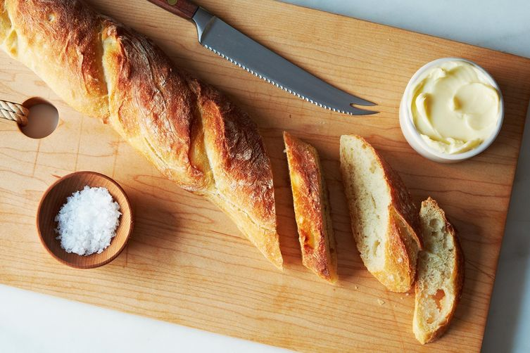

| Home | Cuisine | Recipe | Ingredients | About |
French cuisine consists of the cooking traditions and practices from France. There are many dishes that are considered part of French national cuisine today. A meal often consists of three courses, hors d'oeuvre or entree (introductory course, sometimes soup), plat principal (main course), fromage (cheese course) or dessert, sometimes with a salad offered before the cheese or dessert.
 |
 |
|
Recipes 
|
Ingredients 
|
Additional Information Common Ingredients Bread, Butter, Cheese, Olive oil, Wine, Tarragon Techniques Braising, Flambeing, Grill, Poach, Saute Dishes Croque-Monsieur, Soupe a l'oignon, Cheese Souffle, Pot-au-feu Climate Temperate Mediterranean |